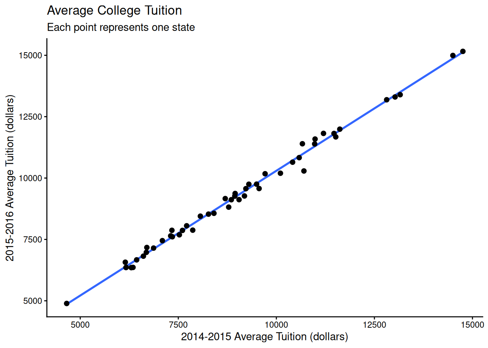

When we build a predictive model, we are interested in how the model will perform on data it hasn’t seen before. If we have lots of data, we can split it into training and test sets to assess model performance. If we don’t have lots of data, it’s better to fit a model using all of the available data and to assess its predictive performance using resampling techniques. The bootstrap is one such resampling technique. This post discusses several variants of the bootstrap that are appropriate for estimating predictive performance.
A brief introduction to the bootstrap
The bootstrap isn’t a particular procedure so much as a general strategy. We assume that our data comes from some underlying population \(F\) that we care about. We’re interested in the sampling distribution of some statistic \(T\) that we calculate from the data. In our case \(T\) is predictive performance.
We don’t know \(F\), but we can treat the data as an approximation \(\hat F\) of \(F\). Here \(\hat F\) is the empirical distribution of the data, which gives equal probability to each observed data point. So we know how to sample from \(\hat F\). The bootstrap says to sample from \(\hat F\) many times and calculate \(T\) using these samples. The sampling distribution of \(T\) under \(\hat F\) then approximates the sampling distribution of \(T\) under \(F\).
The canonical diagram comes from Efron and Tibshirani (1994). In the diagram the bootstrap world approximates the real world:
In terms of assessing model performance, this means that we sample our original data \(X \in \mathbb{R}^{n, p}\) with replacement to generate new datasets \(X^*_1, ..., X^*_B \in \mathbb{R}^{n, p}\), and then we estimate model performance on each of the bootstrap samples \(X^*_b\).
Data & Model
In this post, we’ll fit a linear regression1 and compare:
bootstrap in-sample error
bootstrap out-of-sample error
the optimism bootstrap
the 0.632 bootstrap
the 0.632+ bootstrap
For data, we’ll use average college tuition costs in each state. The original data source is here, but I downloaded it from the Tidy Tuesday repository.
In particular, we’ll see how predictive tuition costs in 2014-15 are for 2015-16 using a simple linear regression of the form2:
Here \(y_i\) is the average tuition in state \(i\) for the 2015-16 academic year3, and \(x_i\) is the average tuition in state \(i\) for the 2014-15 academic year. We have \(n = 50\) data points. Once we fit a model, we’ll refer to the predicted tuition for state \(i\) as \(f(x_i)\). The data looks like:
We quickly plot the data with a linear regression overlaid:
ggplot(data, aes(avg_tuition_14_15, avg_tuition_15_16)) +geom_smooth(method ="lm", se =FALSE) +geom_point(size =2) +labs(title ="Average College Tuition",subtitle ="Each point represents one state",y ="2015-2016 Average Tuition (dollars)",x ="2014-2015 Average Tuition (dollars)") +theme_classic()
`geom_smooth()` using formula 'y ~ x'

To assess model performance, we’ll use squared error, which we calculate as:
\[\mathcal{L(y_i, f(x_i))} = (y_i - f(x_i))^2\]
where we treat \(y\) as a vector in \(\mathbb{R}^n\). Our first measure of model performance is the in sample performance, which is the mean squared error (MSE) on all the training data:
formula <- avg_tuition_15_16 ~ avg_tuition_14_15model <-lm(formula, data)# utility to extract response vector from formula and dataframeresponse <-function(formula, data) model.response(model.frame(formula, data))pred <-predict(model, data)true <-response(formula, data)# in the code I use root mean squared error (RMSE) as a metric rather than # MSE. this keeps the presentation of the math slightly nicer, since I can# omit square roots, but keeps the errors on a more interpretable scale.# I use `Metrics::rmse` for predictions that live in vectors# and `yardstick::rmse` for predictions that live in dataframesin_sample <- Metrics::rmse(pred, true)
The in sample error on the original data is 186 dollars.
Apparent and out of sample bootstrap error
There are several ways to calculate the error on our bootstrap samples. One first step is to calculate the bootstrap in sample error by estimating the performance of a model fit on each bootstrap sample on the each bootstrap sample \(X^*_b\) itself.
To write this out more formally, let \(f_b\) be the model fit to the \(b^{th}\) bootstrapped dataset, let \(I_b\) be the data points that made it into the \(b^{th}\) bootstrap sample and let \(n_b\) be the total number of data points in the \(b^{th}\) bootstrap sample
However, we also know that for example bootstrap sample, some of the original data didn’t get used to fit \(f_b\). We can use that data to calculate bootstrap out of sample error:
\[\texttt{bootstrap out of sample error} = \\ {1 \over B } \sum_{b = 1}^B {1 \over n - n_b} \sum_{i \notin I_b} \mathcal{L}(y_i, f_b(x_i))\]
When someone tells me that they used the bootstrap to evaluate their model, I typically assume that they’re reporting the bootstrap out of sample error, especially if they’re from the machine learning community.
The bootstrap in sample error typically underestimates prediction error, and the bootstrap out of sample error typically overestimates prediction error. There are several variants of the bootstrap that try to correct these biases.
The optimism bootstrap
The first of these is the optimism bootstrap. First we define the optimism of the \(b^{th}\) bootstrap model.
This is the same as calculating the average error of \(f_b\) on the entire original sample, and then subtracting the bootstrap in sample error. To get a better estimate of the overall error we take the average optimism and add it to the in sample error estimate:
Interestingly, the bootstrap out of sample error is somewhat pessimistic (Efron and Tibshirani (1994), Efron and Tibshirani (1997)). The 0.632 bootstrap estimator tries to address this problem by combining the in sample performance estimate with the bootstrap out of sample performance estimate:
Where does the 0.632 come from? On average a bootstrap sample contains 63.2% of the data points in the original dataset. This Cross Validated answer has some nice discussion.
Similarly, the 0.632+ bootstrap estimator tries to find a good balance between the in sample error and the bootstrap out of sample error. To do this, it considers the no information error rate:
which is the expected error rate when data points and responses are randomly assigned. Averaging over all \(i, j\) you get a measure of how well you can predict when you know pretty much nothing. Then you can estimate the relative overfitting of a model with:
\[\texttt{overfit} = {\texttt{bootstrap out of sample error} - \texttt{in sample error} \over \texttt{no info error rate} - \texttt{in sample error}}\]
The 0.632+ uses this to weight the bootstrap out of sample error and the in sample error according to
\[\texttt{w} = \texttt{weight on out of sample bootstrap error} \\ = {0.632 \over 1 - 0.368 \cdot \texttt{overfit}}\]
The idea is that the 0.632 estimator can be optimistic, and to take overfitting into account to correct this. If the relative overfitting is zero, the 0.632+ estimator reduces to the 0.632 estimator.
Actually calculating these things in R
Before anything else, we need bootstrap samples. Luckily, the rsample package makes this super convenient.
# create an `rset` object: a data frame with a list-column full# of bootstrap resamplesboots <-bootstraps(data, times =25)boots
The individual bootstrap samples are contained in the rsplit objects:
one_boot <- boots$splits[[1]]one_boot
<Analysis/Assess/Total>
<50/19/50>
This print method is to help track which data went into the bootstrap sample. The format here is <# data points in resampled data set / # original data points not in the resampled data set / # original data points>.
If we want to see the bootstrap sample itself, we can:
analysis(one_boot)
# A tibble: 50 × 3
state avg_tuition_15_16 avg_tuition_14_15
<chr> <dbl> <dbl>
1 California 9270 9187
2 Wyoming 4891 4654
3 Florida 6360 6345
4 South Carolina 11816 11470
5 Maine 9573 9560
6 Kansas 8530 8270
7 North Carolina 6973 6685
8 Missouri 8564 8409
9 North Carolina 6973 6685
10 Alabama 9751 9496
# … with 40 more rows
If we want to see all the data points that didn’t go into the bootstrap sample, we can use:
assessment(one_boot)
# A tibble: 19 × 3
state avg_tuition_15_16 avg_tuition_14_15
<chr> <dbl> <dbl>
1 Alaska 6571 6149
2 Colorado 9748 9299
3 Connecticut 11397 10664
4 Delaware 11676 11515
5 Georgia 8447 8063
6 Massachusetts 11588 10987
7 Michigan 11991 11618
8 Nebraska 7608 7348
9 New Jersey 13303 13027
10 New York 7644 7306
11 Ohio 10196 10104
12 Oregon 9371 8949
13 Pennsylvania 13395 13157
14 Rhode Island 11390 10977
15 Tennessee 9263 8941
16 Vermont 14993 14501
17 Virginia 11819 11202
18 Washington 10288 10703
19 West Virginia 7171 6698
Now we want to fit models on each of the bootstrap samples and assess various performance metrics. We write some helper functions to smooth things along.
# evaluate model performance on a particular datasetperformance <-function(model, data, metric = Metrics::rmse) {# aside: it would be nice to be able to extract a data/design object from# the model, and then extract the response from that. someday. true <-response(formula, data) pred <-predict(model, data)metric(true, pred)}# get the no info error rate. should be used on the model# fit to full original datano_info_error_rate <-function(model, formula, data, metric = Metrics::rmse) { true <-response(formula, data) pred <-predict(model, data) crossed <-crossing(true, pred)with(crossed, metric(true, pred))}# NOTE: `bs` in variable names is an abbreviation for `bootstrap`# 0.632 bootstrap estimate of performancebs_632 <-function(in_sample, bs_out_of_sample) {0.368* in_sample +0.632* bs_out_of_sample}# 0.632+ bootstrap estimate of performancebs_632p <-function(in_sample, bs_out_of_sample, no_info_error_rate) { relative_overfit <- (bs_out_of_sample - in_sample) / (no_info_error_rate - in_sample) w <-0.632/ (1-0.368* relative_overfit) w * bs_out_of_sample + (1- w) * in_sample}
Now we can fit models on each bootstrapped dataset:
no_info_perf <-no_info_error_rate(model, formula, data)boot_performance <- boots %>%mutate(# fit a model on *bootstrap sample* of datamodel =map(splits, ~lm(formula, analysis(.x))),# bootstrap in sample errorbs_is_perf =map2_dbl(model, splits, ~performance(.x, analysis(.y))),# bootstrap out of sample errorbs_os_perf =map2_dbl(model, splits, ~performance(.x, assessment(.y))),# bootstrap error on full datadata_perf =map_dbl(model, ~performance(.x, data)),# optimismoptimism = bs_is_perf - data_perf,# optimism corrected error estimatebs_optimism = in_sample - optimism,# 0.632 bootstrap error estimatebs_632_perf =bs_632(bs_is_perf, bs_os_perf),# 0.632+ bootstrap error estimatebs_632p_perf =bs_632p(bs_is_perf, bs_os_perf, no_info_perf))
We can calculate the point estimates we discussed above:
clean_performance <- boot_performance %>%select_if(is.numeric) %>%select(-optimism, -data_perf) %>%gather(model, statistic) %>%transmute(measure =recode( model,"bs_is_perf"="bootstrap in sample","bs_os_perf"="bootstrap out of sample" ,"bs_optimism"="optimism bootstrap","bs_632_perf"="0.632 bootstrap","bs_632p_perf"="0.632+ bootstrap"),error = statistic )clean_performance %>%group_by(measure) %>%summarize_if(is.numeric, mean) %>%mutate_if(is.numeric, round) %>% knitr::kable()
measure
error
0.632 bootstrap
188
0.632+ bootstrap
188
bootstrap in sample
180
bootstrap out of sample
192
optimism bootstrap
195
However, point estimates aren’t good ways to compare the performance of two models because they don’t give us a sense of how much model performance might vary on different data sets. Visualizing the sampling distribution of each of the metrics gives us a more complete view of model performance:
For this particular model, we see that the 0.632 and 0.632+ estimators are pretty much the same. This makes sense because a linear model fits the data quick well and so there should be little overfitting. We can also see that the bootstrap in sample error rate has the lowest median.
Given how it can be difficult to keep track of which metric should be calculated on which dataset, I should probably write some tests to confirm that my code does what I want it to. Since this is a blog post, I’m going to pass on that for the moment.
Using the bootstrap in practice
When you have fewer than 20,000 data points, it’s reasonable to use the optimism bootstrap with \(B = 200\) to \(B = 400\). When you have more data, cross-validation4 or simply splitting the data becomes more reliable. Any steps taken to develop a model should be performed on each bootstrap dataset. For example, if you use LASSO for feature selection and then fit a model, the feature selection step needs to be included in the bootstrap procedure.
In some studies (Steyerberg et al. (2001)) the 0.632 and 0.632+ estimators have similar performance. Asymptotically, the 0.632 estimator is equivalent to the optimism bootstrap (Efron and Tibshirani (1994))5. It isn’t clear if one is preferrable over the other in finite samples, so I’d just stick with the estimator your audience is most likely to already be familiar with. You should be fine so long as you avoid using the bootstrap in sample error estimate.
If you are interested in comparing several models, it probably isn’t sufficient to compare the sampling distributions of these error measures. If you fit multiple models on the same bootstrap datasets, the bootstrap samples will have an impact on model performance. Hierarchical models are a good way to model this. Once you have your bootstrapped error estimates, the tidyposterior package can help you take the next step when comparing models.
If you’re interested, stick around for future posts, where I’ll cover the process of building predictive models and how to select from several predictive models.
Feedback is always welcome!
References
Efron, Bradley, and Robert Tibshirani. 1997. “Improvements on Cross-Validation: The .632+ Bootstrap Method.”Journal of the American Statistical Association 92 (438). http://www.jstor.org/stable/2965703.
Efron, Bradley, and Robert J Tibshirani. 1994. An Introduction to the Bootstrap. CRC press.
Harrell, Frank. 2015. Regression Modeling Strategies: With Applications to Linear Models, Logistic and Ordinal Regression, and Survival Analysis. Springer.
Steyerberg, Ewout W, Frank E Harrell, Gerard J. J. M Borsboom, M. J. C Eijkemans, Yvonne Vergouwe, and J.Dik F Habbema. 2001. “Internal Validation of Predictive Models: Efficiency of Some Procedures for Logistic Regression Analysis.”Journal of Clinical Epidemiology 54 (8). http://www.sciencedirect.com/science/article/pii/S0895435601003419.
Footnotes
I feel guilty about using linear regression as an example. OLS on the original data is too simple. There’s no feature selection, no parameter tuning, etc. I’m on the lookout for a good canonical modelling example to use in posts like this. Hopefully the work on recipes and parsnip standardizes interfaces enough to make this reasonable sometime soon.↩︎
I’m trying to get into the habit of always writing out the mathematical form of the model I’m fitting. Richard McElreath writes about why this is important.↩︎
Typically, regressions using averaged data have inappropriately small confidence intervals. However, the goal here is to demonstrate various bootstrapping methods, rather than inference, so we’ll ignore this for now.↩︎
Cross validation is much less stable than the bootstrap on data sets with less than 20,000 data points (Steyerberg et al. (2001)). Frank Harrell has run a number of simulations showing that you need at least 100 repetitions of 10-fold cross-validation to get accurate error estimates at this data size (Harrell (2015)).↩︎
The relevant chapter can be found online. You may also enjoy the draft of Frank Harrell’s new book.↩︎
![]()